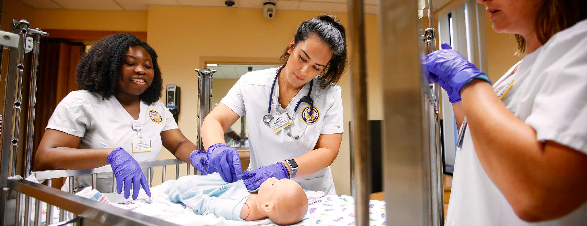

An accelerated nursing program/BSN program prepares individuals with an undergraduate degree in any field to become a registered nurse. It is a fast track program that ranges 12 months to 2 years, depending on the program you are enrolled in. The structure of these programs are very intense, but prepare you well to take the NCLEX and become a registered nurse. Nurses are currently in very high demand and would be a great career for someone who has a passion for helping others, enjoys a fast-paced environment, is compassionate, and is looking for a competitive salary. The nursing world gives you room to explore different specialties and areas of focus. For instance, pediatrics, geriatrics, neurology, oncology, dermatology, and even management! An acceleterated nursing program is a great choice for you if you are looking to become an RN!
Hi! My name is Miranda Yee and I am currently a senior at the University of Pittsburgh! I will be graduating this coming Spring with a major in psychology and a minor in economics! My time at the University of Pittsburgh has prepared me very well to pursue further education or jump into the career world! I have had a well-rounded education during my four years at this University and cannot wait to continue to learn! My end goal is to become a registered nurse and care for individuals during some of the most difficult times they be experiencing. I am interested in the clinical aspect of nursing and cannot wait to explore all the different specialties and eventually find my fit. writemore....